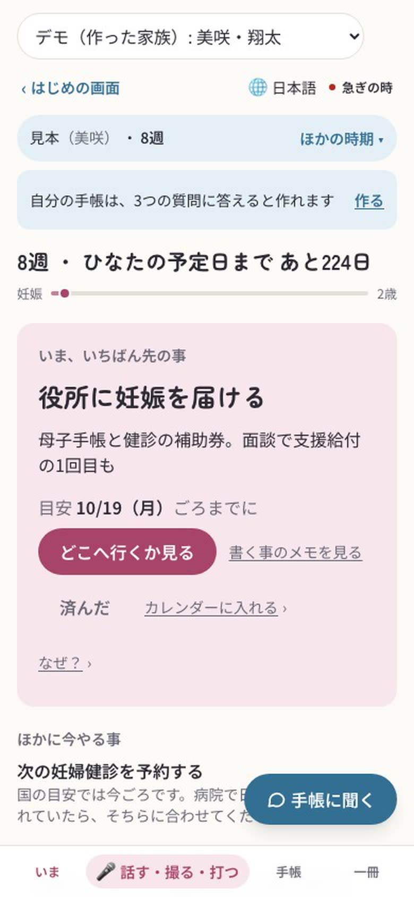
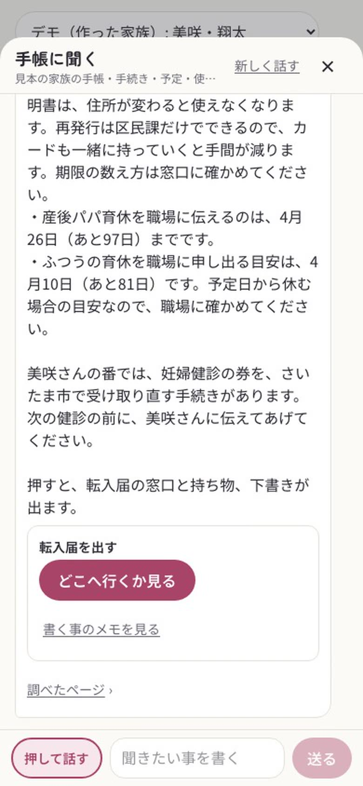
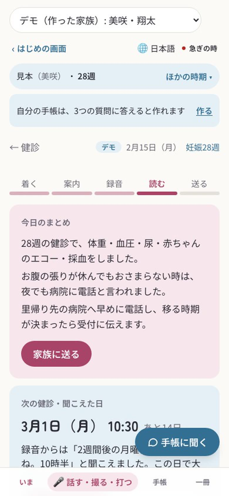
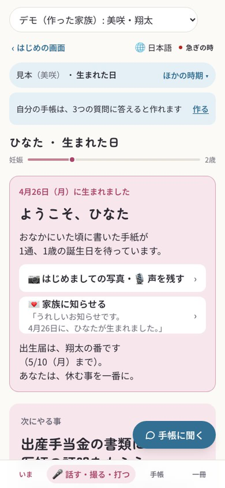
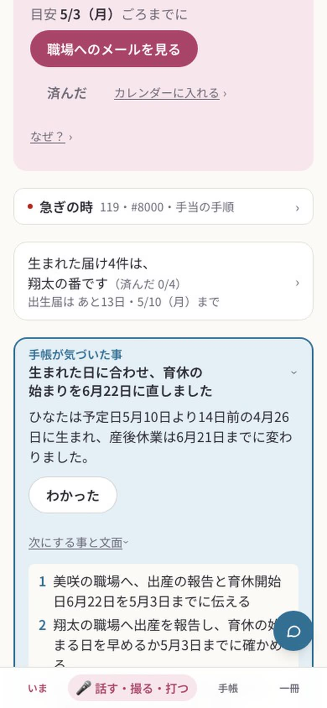
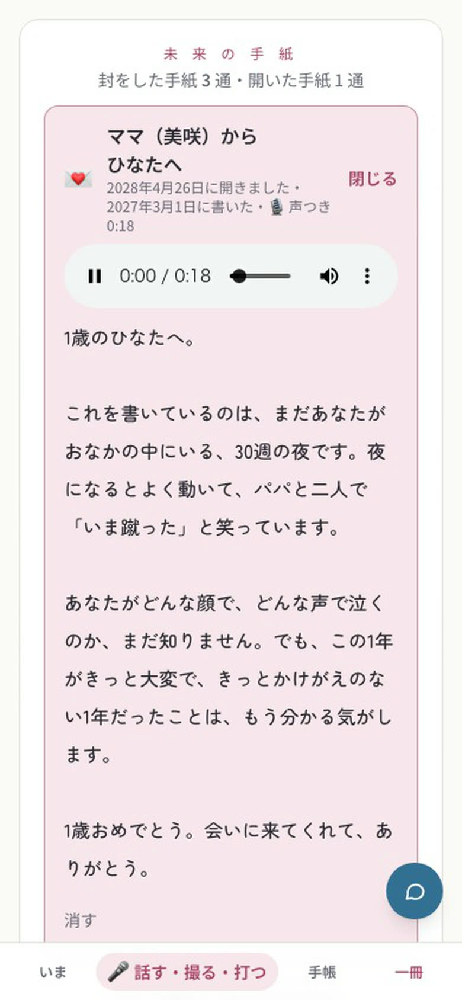
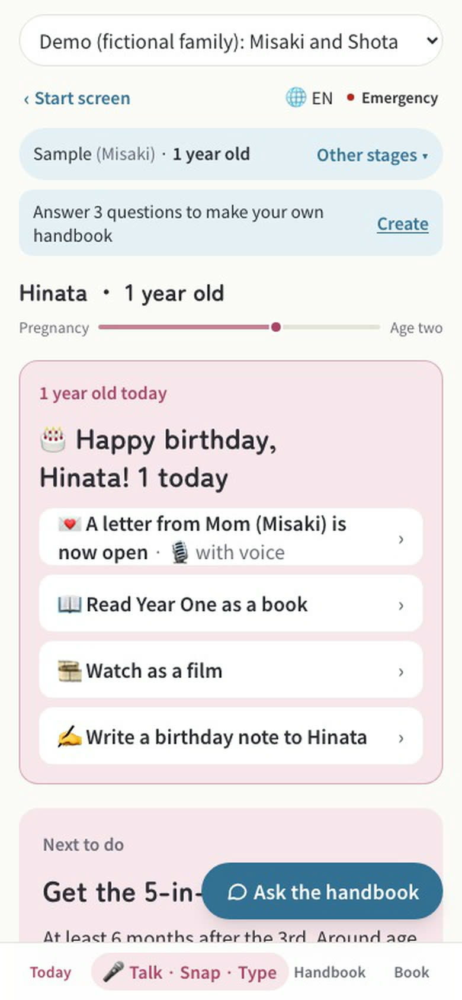
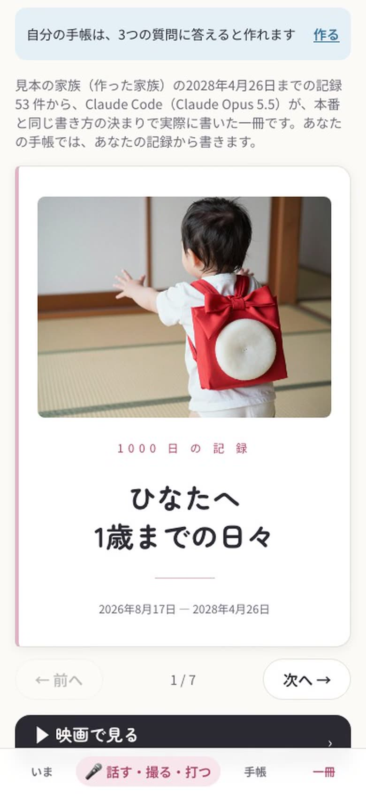
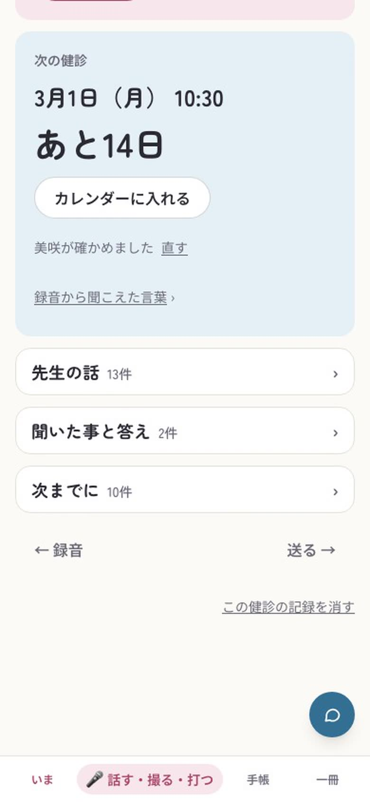

困り事The problem
妊娠から2歳まで、1000日。From pregnancy to age two: 1,000 days.
役所・産院・会社の届けと手続きが、次々に来ます。それぞれの窓口は自分の分しか持っていなくて、全体を持つ人がいません。出産は一生に1〜2回で、練習もできません。Forms and procedures keep coming from the city office, the clinic and the workplace. Each counter holds only its own part, and nobody holds the whole. Most people give birth once or twice in a lifetime, so there is no practice run.
見本の家族の1000日の用事。うち13件は、法で期限が決まっている。Things to do in the sample family's 1,000 days. 13 of them have legal deadlines.
生まれてからの8週の用事は14件。妊娠中で一番多い8週（6件）の2倍を超える用事が、体の一番つらい時に来る。14 things land in the first 8 weeks after birth — more than twice the busiest 8 weeks of pregnancy (6), right when the body needs rest most.
出生届の期限（戸籍法第49条）。生まれた日から数える。Deadline for the birth registration (Family Register Act, Art. 49), counted from the day of birth.
用事の数は、見本の家族（佐藤家・作った家族）の予定表を、アプリの scheduleFor で数えたもの。線の上の点の位置は、ふつうの時期のおおよそ。Counts come from the sample family's (the Satos', fictional) schedule, computed with the app's scheduleFor. Dot positions on the line are typical, approximate timings.
動いているところHow it moves
1000日のうちの、ある日。Some days out of the 1,000.
見本の家族は、美咲と翔太（作った家族）。どの画面も、このアプリを iPhone の大きさで動かして撮りました。The sample family is Misaki and Shota (fictional). Every screen was captured from the running app at iPhone size.

妊娠8週Week 8 of pregnancy
週数で、手帳が自分から起きるIt wakes up on the family's clock
今日やる事を、一つだけ出す。役所に妊娠を届ける・目安の日まで。One thing to do today, with a target date: report the pregnancy to the city office.

引っ越した日Moving day
手帳に聞くAsk the handbook
町の公式ページまで調べて答え、答えの下に次にやる事（窓口・持ち物・下書き）を置く。It researches the city's official pages, answers, and puts the next step (counter, what to bring, drafts) right under the answer.
Claude Sonnet 5.5
妊娠28週・健診の日Week 28 · checkup day
健診では、録音するだけAt a checkup, just record
聞こえた言葉を崩さずに、やる事と次の健診の日に分ける。日付は、家族が確かめてから予定に入る。Keeping the words as heard, it sorts out what to do and the next checkup date. Dates enter the plan only after the family confirms them.
Claude Opus 5.5
生まれた日The day of birth
「あなたは、休む事を一番に。」"Put your rest first."
生まれた届けは、パートナーの番に。役所へ行く日を1つにまとめる。The birth paperwork goes to the partner, bundled into a single trip to the city office.

予定より早く生まれたらIf the baby comes early
休みと期限を、数え直すIt recounts leave and deadlines
生まれた日から数え直し、職場の上司へのメールまで、それぞれの名前で下書きする。最後の OK は家族が押す。It recounts from the actual birthday and drafts even the email to the boss, in each parent's name. The family presses the final OK.
Claude Opus 5.5
1歳の誕生日First birthday
おなかにいた頃の手紙が開くA letter from the womb days opens
手紙と声は家族の鍵で封をして、Claude には渡さない。Letters and voices are sealed with the family's key and never sent to Claude.

どの言葉でもIn your language
日本語・中文・EnglishJapanese · Chinese · English
日本語が読めない親も、自分の言葉で同じ手帳を使える（2024年は、親の少なくとも1人が外国人の子が 5.4％）。Parents who can't read Japanese use the same handbook in their own language (in 2024, 5.4% of babies had at least one foreign parent).

1歳の時点（2歳で1000日の一冊に）At age 1 (at 2, the full 1,000 days)
子どもへの一冊A book for the child
家族の記録から、子どもへの一冊を書く。写真と家族の声で流す映画にもなる。From the family's records it writes a book for the child, and a short film with photos and the family's voices.
Claude Opus 5.5横に流すと続きがあります →Swipe for more →
3つの言い分Three commitments
先に動くのは手帳。決めるのは家族。The handbook moves first. The family decides.
全体を抱えて、先に動くHold the whole, move first
週数と月齢で自分から起き、どの町でも公式ページを調べ、期限・下書き・窓口まで用意する。家族がするのは最後の OK だけ。It wakes on the pregnancy week and the baby's age, checks any city's official pages, and prepares deadlines, drafts and counters. The family only gives the final OK.
最後に決めるのは本人The person decides last
録音や写真から出た日付は「こう聞こえました。大丈夫ですか？」と聞く。手紙と声は家族の鍵で封をし、Claude には渡さない。A date taken from a recording or photo is asked back: "This is what I heard. Is it right?" Letters and voices are sealed with the family's key and never sent to Claude.
家族で1冊、親の言葉でOne book for the family, in the parents' words
パートナーにも自分の番と、自分の名前の下書き。日本語・中文・English で使える。The partner gets their own turns and drafts in their own name. It works in Japanese, Chinese and English.
体や心の事は、健診で聞く事と連絡先へつなぎます（#8000 は47都道府県、#7119 は42地域の番号を持っています）。答えるのではなく、橋になります。For the body or the mind, it turns worries into questions for the next checkup and points to the right line (it knows #8000 for all 47 prefectures and #7119 for 42 areas). It is a bridge, not an answer.
Claude の使い方How Claude is used
仕事ごとに、Claude を選ぶ。The right Claude for each job.
- 撮る・話すの読み取りReading photos and voice
- 下書きDrafts
- 手帳に聞く（道具を選んで答える）Ask the handbook (with tools)
- 調べ物（web 検索・出典つき）Research with web search and citations
- 手帳が気づいた事（家族の形と記録の突き合わせ）What the handbook noticed (family shape vs. records)
- 健診の整理（先生の言葉）Checkup notes (the doctor's words)
- 子どもへの一冊と、映画の台本The book for the child and its film script
- 手帳に聞くの答えの見張り（体や心の判断をしていないか）Guarding Ask replies (no health or mental-health judgment)
- 調べ物の整えReshaping research
正本は app/src/lib/claude.ts の4つの定数。1日の上限を超えた日は Claude の仕事だけが止まり、見本の家族は見本の答えで動きます。The source of truth is four constants in app/src/lib/claude.ts. On a day past the spending limit only the Claude jobs pause; sample families keep running on recorded answers.
作り方How it was built
作り手1人 ＋ Claude CodeOne maker + Claude Code
大会の期間中（2026-11-02〜）に、すべて新しく作りました。Claude Code の会話を役ごとに分けて同時に動かし、直すたびに、国の統計に近似した1000の家族で1000日を早送りして確かめています。Everything was built new during the hackathon (from 2026-11-02). Claude Code sessions ran side by side, one role each, and every fix is replayed through 1,000 days for 1,000 families that approximate national statistics.
main のコミットは 400 以上。うち 300 以上が Claude と共著（締め切りまで増え続けるので、動画と同じく「以上」で書いています）400+ commits on main, 300+ co-authored with Claude (still growing until the deadline, so written as a floor, as in the video)
統計に近似した1000家族と珍しい30家族 × 1000日を、直すたびに早送り（のべ約106万日・確かめる決まり23こ）1,000 families approximating national statistics plus 30 rare cases, fast-forwarded through 1,000 days on every fix (≈1.06M family-days, 23 rules)
公的な統計から1000組を作った。1組は2025年の出生 671,270人の約671家族ぶんPublic statistics behind the 1,000 families; each stands for ≈671 families (671,270 births in 2025)
なりきり（Opus が家族になって iPhone の大きさで画面を触る）6回・のべ36家族で見つかった事Findings from 6 role-play rounds (36 family sessions) where Opus used the app at iPhone size
作り手の話From the maker
家族の本物の健診で、使いました。We used it at a real checkup.
作り手は、自分の家族が使う1号目です。期間中に、家族の本物の妊婦健診でこの手帳を使いました。録音から作ったまとめの中で、次の健診の日付が聞き違えられていました。確かめていない日付は、今日の画面にも、前の日の声かけにも、家族へ送る文にも、そのまま広がります。I am the first user — my own family uses this handbook. During the hackathon we used it at a real prenatal checkup, and the summary made from the recording misheard the next checkup date. An unconfirmed date spreads everywhere: to today's screen, to the reminder the day before, to the message sent to family.
聞き違いは、仕組みだけでは防ぎ切れません。だから、最後の OK を本人に残す形に作り直しました。「録音からはこう聞こえました。この日で大丈夫ですか？」本人が「大丈夫」を押すまで、その日付は予定にも、カレンダーにも、送る文にも進みません。Mishearing can't be fully prevented by design. So I rebuilt it to leave the final OK to the person: "This is what the recording sounded like. Is this date right?" Until they press OK, the date never moves into the plan, the calendar or any message.
— Kamicham

手続きは、手帳に任せて。Leave the paperwork to the handbook.
あなたは、子どものそばに。Stay close to your child.